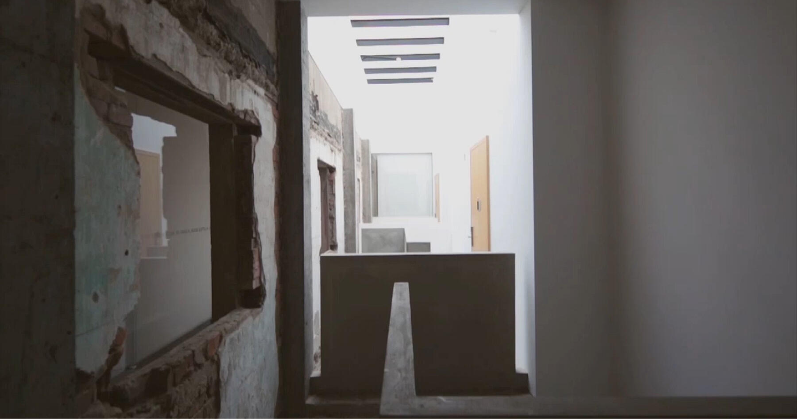
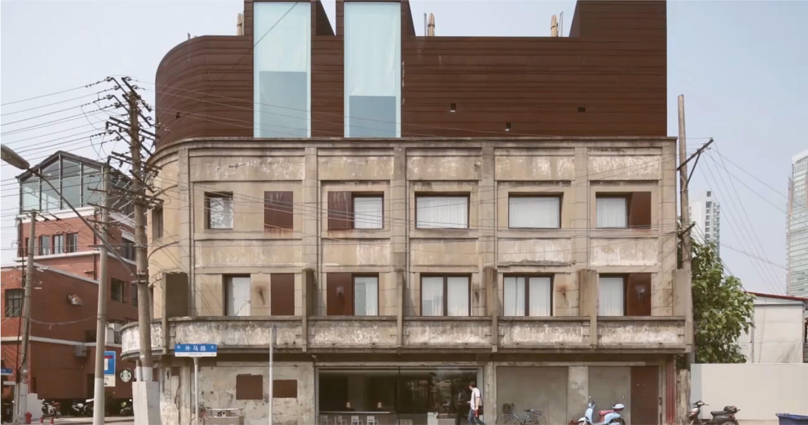
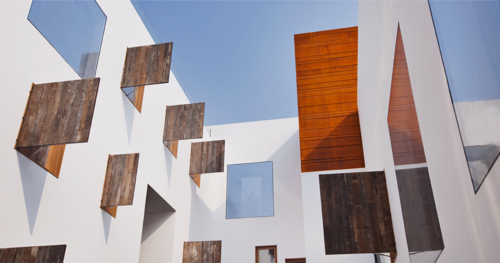

Approaching the site, a Japanese army building from the 1930s, with
its history written all over its surfaces, the real task at hand was
to show restraint in the restoration process and resist the natural
urge to fix every flaw. We were very careful to delineate where new
elements were inserted and where the old remained untouched. While
some of the spaces have been refinished and smoothed over, portions
of wall are left crude, exposing crumbling bricks or delicate
lathwork behind deteriorating plaster. Encased in a glass shield,
these raw wall sections evoke the archival quality of a museum
display, and suddenly the overlooked mundane is elevated to the
precious. Peeling back the layers of finishes was akin to performing
an autopsy-uncovering the lives and narratives hidden within each
imperfection, an excavation of memories that brings the most
intimate moments of inhabitation to public light.


In addition to exploring how to convey ideas of "home" and
domesticity into a foreign location, the Waterhouse seeks to
reinterpret the traveler's experience by challenging the typology of
a hotel in its basic conception. To accomplish this, we drew on our
extensive experience living in a typical Shanghai nong tang alley,
where there is no such thing as actual privacy and daily life is
full of surprises and discoveries.